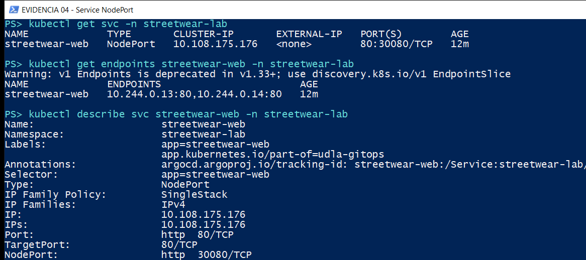
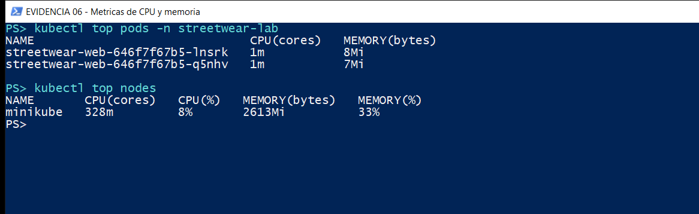
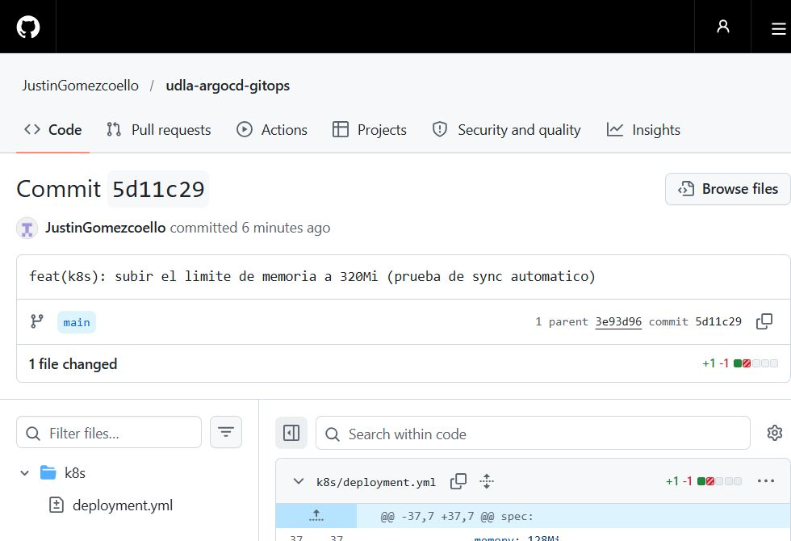
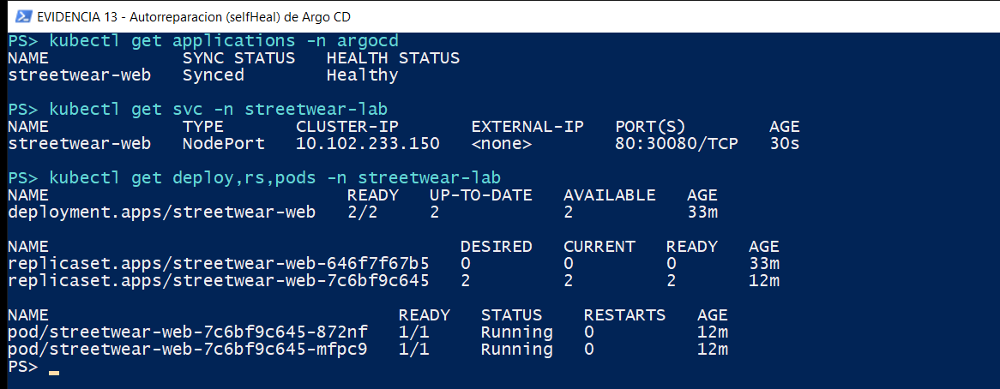

streetwear-web en estado Synced / Healthy.
Se implementó un flujo de entrega continua basado en GitOps sobre un clúster local de
Kubernetes (Minikube con controlador Docker). La aplicación desplegada es una tienda web
(streetwear) desarrollada previamente en React 18 y servida por nginx, empaquetada en una
imagen propia. El repositorio Git actúa como única fuente de verdad y Argo CD reconcilia de
forma automática el estado declarado en la carpeta k8s/ con el estado real del clúster.
El despliegue incluye un Deployment con dos réplicas, un Service NodePort, un Horizontal Pod Autoscaler entre 2 y 5 réplicas con objetivo de CPU del 50 % y Metrics Server como proveedor de métricas. Se verificó el escalamiento real de 2 a 5 Pods bajo carga y el retorno automático a 2, además de la sincronización automática de un cambio hecho únicamente en Git y de la autorreparación de un objeto eliminado manualmente.
kubectl apply para sincronizar| Indicador | Resultado comprobado |
|---|---|
| Aplicación desplegada | Tienda React servida por nginx (imagen udla-web:1.0) |
| Herramienta GitOps | Argo CD v3.6.1, Automated Sync con prune y selfHeal |
| Deployment inicial | 2 réplicas disponibles (2/2) |
| Escalado máximo observado | 5 réplicas disponibles (5/5) |
| Reducción automática | De 5 a 2 réplicas |
| Sincronización automática | Cambio en Git aplicado sin kubectl apply (nuevo ReplicaSet) |
| Autorreparación | Service eliminado y recreado por Argo CD |
| Acceso web | Service NodePort 80:30080 y túnel de Minikube |
| Entrega | Repositorio público, manifiestos, evidencias numeradas e informe |
Automatizar el despliegue de una aplicación web en Kubernetes mediante Argo CD, utilizando un repositorio Git como fuente de verdad, con los recursos Deployment, Service y Horizontal Pod Autoscaler, y demostrar la sincronización automática ante cambios en el repositorio.
El alcance es una prueba local de aprendizaje: no contempla un clúster multinodo, TLS corporativo, persistencia compartida ni un registro de imágenes privado. Se considera exitoso cuando la aplicación está disponible (2/2), el HPA opera entre 2 y 5 réplicas con objetivo del 50 %, Argo CD muestra la aplicación como Synced / Healthy, un cambio hecho únicamente en el repositorio se refleja en el clúster sin intervención manual y un recurso eliminado se restablece automáticamente.
| Concepto | Descripción aplicada en el trabajo |
|---|---|
| GitOps | Modelo de operación en el que el repositorio Git describe el estado deseado y un agente (Argo CD) lo aplica y lo mantiene de forma continua. |
| Argo CD | Controlador de entrega continua para Kubernetes. Compara el estado del repositorio con el del clúster y ejecuta la sincronización; detecta desviaciones y las corrige. |
| Deployment | Controlador declarativo que administra un ReplicaSet y la plantilla de los Pods. Declara réplicas, imagen, recursos y sondas. |
| ReplicaSet | Mantiene el número de Pods indicado. Al cambiar la plantilla, el Deployment crea un ReplicaSet nuevo y retira el anterior (RollingUpdate). |
| Service NodePort | Punto de acceso estable: selecciona Pods por etiqueta y publica un puerto del nodo (30080) hacia el puerto del contenedor (80). |
| Metrics Server / HPA | Metrics Server expone el consumo de CPU y memoria; el HPA compara ese consumo con la solicitud de CPU del Pod y ajusta las réplicas dentro del rango permitido. |
| Minikube | Clúster Kubernetes de un solo nodo sobre Docker Desktop, con runtime containerd. |
El flujo tiene tres planos: el desarrollador publica cambios en GitHub; Argo CD, que corre dentro del clúster, compara el repositorio con el estado real; y los controladores de Kubernetes crean o ajustan los objetos. El navegador del usuario consume la aplicación a través del Service NodePort.
Desarrollador
│ git push
▼
┌──────────────────────────────┐
│ GitHub (fuente de verdad) │ k8s/deployment.yml
│ │ k8s/service.yml
│ │ k8s/hpa.yml
└──────────────┬───────────────┘
│ reconciliación automática
▼
┌───────────────┐
│ Argo CD │ OutOfSync → Synced
└───────┬───────┘
│ aplica el estado declarado
▼
┌────────────────────────────────────────────┐
│ Kubernetes (Minikube) — streetwear-lab │
│ │
│ Service NodePort 30080 ──► Deployment │
│ ├─ Pod 1 │
│ ├─ Pod 2 │
│ └─ … hasta 5 │
│ │
│ HPA: 2 → 5 réplicas, CPU 50 % │
│ Metrics Server: métricas de CPU │
└────────────────────────────────────────────┘| Elemento | Configuración aplicada | Función |
|---|---|---|
| Namespace | streetwear-lab | Aislar los recursos de la actividad |
| Deployment | streetwear-web, 2 réplicas iniciales | Declarar la plantilla y el número de Pods |
| Imagen | udla-web:1.0 (React + nginx) | Artefacto propio de la aplicación |
| Service | NodePort, puerto 80 → 80, nodePort 30080 | Acceso externo a la aplicación |
| HPA | mínimo 2, máximo 5, CPU 50 % | Escalamiento horizontal automático |
| CPU solicitada | 100m | Base del cálculo de utilización del HPA |
| Memoria solicitada | 128Mi | Reserva para planificación |
| Límites | 500m CPU / 320Mi memoria | Tope de consumo por Pod |
| Estrategia | RollingUpdate (maxUnavailable 0) | Actualizar sin cortar el servicio |
| Sincronización | Automated (prune + selfHeal) | Aplicar y corregir el estado desde Git |
Se utilizó Windows con Docker Desktop. El clúster se creó con Minikube usando el controlador
Docker, con 4 CPU y 6 GB de memoria para alojar Argo CD junto con la aplicación. El runtime del
nodo es containerd, por lo que la imagen se construyó en el equipo y se cargó al clúster con
minikube image load.
| Herramienta | Versión observada |
|---|---|
| Docker Desktop | 29.6.2 |
| Minikube | v1.39.0 |
| kubectl (cliente) | v1.36.1 |
| Kubernetes | v1.37.0 (containerd 2.3.4) |
| Argo CD | v3.6.1 (manifiestos stable) |
minikube start --driver=docker --cpus=4 --memory=6144
minikube addons enable metrics-server
kubectl create namespace argocd
kubectl apply -n argocd --server-side --force-conflicts \
-f https://raw.githubusercontent.com/argoproj/argo-cd/stable/manifests/install.yamludla-argocd-gitops/
├── app/ # aplicación (React + nginx) y su Dockerfile
├── k8s/
│ ├── deployment.yml # 2 réplicas, recursos, sondas, puerto 80
│ ├── service.yml # NodePort 80 → 80 (30080)
│ └── hpa.yml # 2–5 réplicas, CPU 50 %
├── argocd/
│ └── application.yml # Application con Automated Sync
├── evidencias/ # 13 capturas numeradas
└── README.md
La aplicación se empaquetó con un Dockerfile de dos etapas: compilación de React con
node:20-alpine y publicación de los archivos estáticos con nginx:alpine.
El servidor nginx incluye la regla try_files necesaria para una aplicación de una sola
página y una ruta /healthz para las sondas.
docker build -t udla-web:1.0 -f app/Dockerfile app
minikube image load udla-web:1.0
minikube image ls | findstr udla-web
El manifiesto declara replicas: 2, etiquetas coherentes entre
selector.matchLabels y template.metadata.labels
(app: streetwear-web), la imagen propia con imagePullPolicy: IfNotPresent
y el puerto 80 del contenedor. Se definieron requests (100m / 128Mi) para que el HPA
tenga una base de cálculo y limits (500m / 320Mi) como tope. Las sondas
startup, readiness y liveness controlan cuándo el Pod recibe tráfico y cuándo
debe reiniciarse.
El Service es de tipo NodePort, con port: 80, targetPort: 80
y nodePort: 30080; su selector app: streetwear-web coincide con las
etiquetas de los Pods. El HPA usa autoscaling/v2, apunta al Deployment
streetwear-web y fija minReplicas: 2, maxReplicas: 5 y
averageUtilization: 50 sobre CPU, con políticas de escalado para evitar cambios
bruscos.
Se creó la Application streetwear-web apuntando al repositorio público, a
la rama main y a la ruta k8s, con syncPolicy.automated
(prune y selfHeal) y CreateNamespace=true. La aplicación se
registró con un único kubectl apply -f argocd/application.yml; a partir de ahí Argo CD
creó el Deployment, el Service y el HPA.
Application excluye /spec/replicas mediante
ignoreDifferences. De lo contrario, Argo CD revertiría cada escalado del HPA y se
produciría un bucle de reconciliación. Con esta exclusión, Argo CD administra la plantilla
(imagen, recursos, sondas) y el HPA administra el número de réplicas.
Los siete Pods de Argo CD quedaron en estado Running y la aplicación se registró
correctamente. La primera conciliación creó los tres recursos en el namespace
streetwear-lab.
streetwear-web en estado Synced / Healthy.
El Deployment alcanzó READY 2/2 y el ReplicaSet activo mantuvo dos Pods en estado
1/1 Running sin reinicios. Cada Pod recibió su propia dirección IP interna.

El Service quedó con IP interna 10.108.175.176 y publicó el puerto
80:30080/TCP. Sus endpoints corresponden a las IP de los dos Pods, lo que
confirma que el selector está bien asociado. El acceso se realizó mediante el túnel de Minikube,
que publica el NodePort en un puerto local.

app=streetwear-web,
targetPort: 80 y nodePort: 30080, con dos endpoints activos.
Con Metrics Server habilitado se obtuvieron las métricas de los Pods
(kubectl top pods). El HPA reportó cpu: 1%/50%, confirmando que puede
calcular la utilización respecto de la solicitud de 100m por Pod. El valor se interpreta sobre la
request, no sobre la capacidad total del procesador.


Para comprobar que el repositorio es la fuente de verdad se modificó únicamente el manifiesto
k8s/deployment.yml en Git (el límite de memoria pasó de 256Mi a 320Mi) y se publicó en
la rama main. No se ejecutó ningún kubectl apply.

main del repositorio
udla-argocd-gitops.
Argo CD detectó la diferencia, aplicó el manifiesto y el Deployment generó un nuevo ReplicaSet
(7c6bf9c645) que reemplazó a los Pods anteriores sin intervención manual. La
aplicación permaneció Synced / Healthy.

Se generó carga con un Pod temporal que ejecutó ab (400 conexiones concurrentes)
contra el Service. El consumo subió a cerca de 482 % de la solicitud de CPU y el HPA escaló
en dos pasos: 2 → 4 → 5 réplicas. El Deployment llegó a 5/5 con cinco Pods
Running.

Al eliminar el generador de carga el consumo volvió a ~1 % y el HPA redujo las réplicas de 5 a 2, respetando la ventana de estabilización configurada para el descenso.

Como prueba de la reconciliación se eliminó manualmente el Service con kubectl delete.
Argo CD detectó la ausencia del objeto y lo recreó a partir del manifiesto del repositorio, sin
intervención humana. El Service recreado conservó el tipo NodePort y el puerto 30080.


npm install durante la construcción
La primera versión del Dockerfile usaba node:18-alpine y el
npm install terminaba con código 1 sin mensaje claro; el registro era accesible desde
el contenedor (npm ping fallaba, wget al registro funcionaba). Se verificó
que node:20-alpine funcionaba correctamente en el mismo entorno y se actualizó la etapa
de compilación. La imagen final compiló sin errores.
La instalación con kubectl apply falló con
"The CustomResourceDefinition applicationsets.argoproj.io is invalid: metadata.annotations: Too
long", porque la anotación de last-applied-configuration supera el límite de 256 KB. Se
resolvió usando Server-Side Apply
(kubectl apply --server-side --force-conflicts). Un segundo intento fue necesario
porque dos NetworkPolicies no se crearon por un timeout transitorio de etcd.
spec.replicas
Si Argo CD administra spec.replicas mientras el HPA también lo modifica, cada escalado
del HPA se revierte en la siguiente reconciliación y se entra en un bucle. Se añadió
ignoreDifferences para /spec/replicas del Deployment; así Argo CD sigue
detectando cambios en el resto de la plantilla y el HPA conserva la autoridad sobre el número de
réplicas. Esta decisión quedó documentada en el repositorio.
El servidor de Argo CD publica HTTPS con un certificado autofirmado. Para revisar la interfaz desde
el equipo local se agregó el argumento --insecure al Deployment del servidor y se
expuso con kubectl port-forward. Es un ajuste exclusivo del laboratorio: en un entorno
real se mantiene TLS con un certificado válido.
Con el controlador Docker de Minikube en Windows, la IP del nodo no es alcanzable desde el host. El
acceso se realizó con minikube service, que abre un túnel local hacia el NodePort,
manteniendo el Service publicado en el puerto 30080 dentro del clúster.
El trabajo demuestra el cambio de modelo que propone GitOps: el clúster deja de configurarse con comandos manuales y pasa a reconciliarse de forma continua contra un repositorio. Argo CD aplicó los tres manifiestos en la primera sincronización, detectó posteriormente un cambio hecho únicamente en Git y lo reflejó creando un nuevo ReplicaSet, y recreó un Service eliminado sin intervención humana.
La verificación del escalamiento mostró que el HPA requiere una solicitud de CPU bien definida y Metrics Server operativo: con 100m solicitados, el objetivo del 50 % equivale a 50m por Pod, por lo que la carga de prueba elevó la utilización muy por encima de la meta y provocó el crecimiento de 2 a 5 réplicas, con retorno posterior a 2 al desaparecer la carga.
También quedó evidenciado un aspecto de diseño relevante: cuando conviven un HPA y una herramienta
GitOps, es necesario excluir spec.replicas de la comparación, de lo contrario ambos
controladores se contradicen. Documentar estas decisiones es parte del valor del repositorio como
fuente de verdad.
El código, los manifiestos y las evidencias están publicados en un repositorio público de GitHub,
rama main, con los archivos k8s/deployment.yml,
k8s/service.yml, k8s/hpa.yml, argocd/application.yml,
app/Dockerfile, la carpeta evidencias/ y el README.md con el
procedimiento completo.
https://github.com/JustinGomezcoello/udla-argocd-gitops